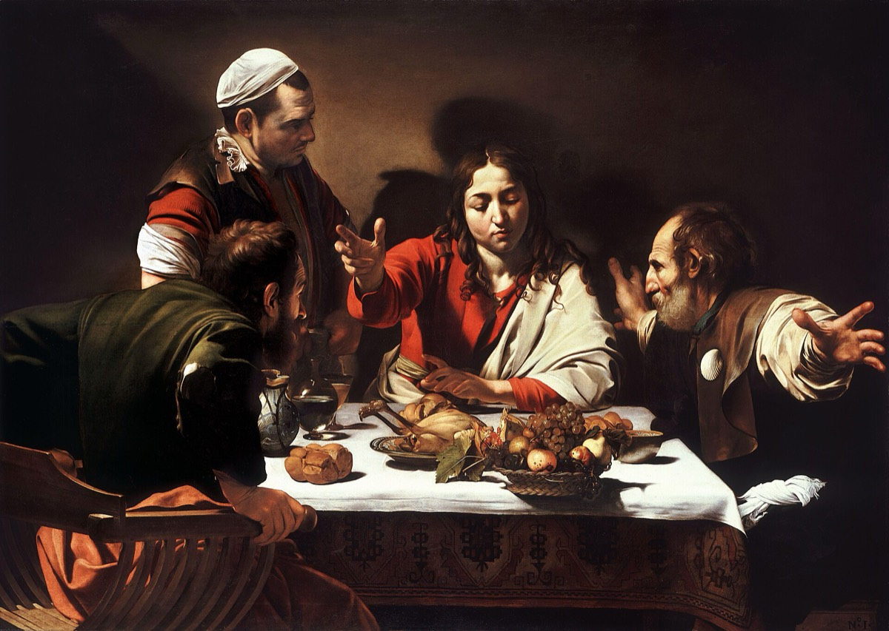

The Firstfruits
He Is Risen
But now is Christ risen from the dead, and become the firstfruits of them that slept.
1 Corinthians 15:20

The talks
- Office Firstfruits was not a figure of speech. It was an offering with a date on the calendar. Find out what the feast of firstfruits was, when it fell in relation to Passover, and what a family did with the sheaf. Then read 1 Corinthians 15:20-23.
- Case All four writers put women at the tomb first. In that world a woman's testimony was not accepted in court. Nobody constructing a persuasive account would build it that way. Find out why all four kept it anyway.
- Epistle Ephesians 4:8-10. He led captivity captive, and he descended first into the lower parts of the earth. Paul is telling us where he was and what he was doing during the three days the tomb was sealed.
- Restoration D&C 138, the vision of the redemption of the dead, read with 1 Peter 3:18-20 and 4:6. What was organized in the spirit world while his body lay in the tomb.
- Text John 20:1-18. Mary at the tomb, mistaking him for the gardener, and then one word: Mary. Work why she did not know him and what made her know him.
- World The tomb itself, the stone, the Roman seal, and what a guard risked by failing. Then the road to Emmaus as ground: find out how far it is, how long that walk takes, and what time they would have arrived.
- Witness Thomas, John 20:24-29. He asked for evidence, said exactly what he would require, and was handed it. Take him through the questions on the facing page, and be fair to him.
- Objection The alternatives that have been offered: the wrong tomb, the swoon, the stolen body, the shared hallucination. Take each one, state it fairly, and answer it.
The title
Paul does not call him the resurrection here. He calls him the firstfruits, and that is a farming word with a date attached. Under the law, when the barley began to ripen, a family did not harvest the field. They cut one sheaf, brought it to the priest, and waved it before the Lord, and only then could the rest be gathered. The first sheaf was proof the harvest was real and a promise that the rest was coming. That is Paul's whole argument in 1 Corinthians 15. If Christ is the firstfruits, then a resurrection is not something that happened once to one man. It has started, and everyone else is the rest of the field. Watch what Paul does with it: as in Adam all die, even so in Christ shall all be made alive, but every man in his own order. There is a sequence, and he is the first of it. This cohort speaks the week after Easter, which means you will stand up in front of a school that heard the story on Sunday. Give them the part they have not heard.
Required reading, for every speaker in this cohort
- 1 Corinthians 15, straight through
- John 20 and 21
- Luke 24
- D&C 138:11-37
- Leviticus 23:9-14
Questions for thought
- Find out what the feast of firstfruits was and when it fell that year. What does the timing do to Paul's word choice?
- Mary stood next to him and did not recognize him until he said her name. Why not?
- Two men walked seven miles with him and did not know him until he broke bread. What does that tell you about how he is recognized?
- All four accounts differ on details at the tomb. List the differences honestly. Do they undermine the accounts or support them?
- The risen body could be touched, and it ate fish, and it also came through a shut door. What kind of body is that?
- 1 Peter says he preached to the spirits in prison. D&C 138 says how it was organized. What was happening during those three days?
- Thomas is remembered for doubting, but he is also the one who said "let us also go, that we may die with him." Is his reputation fair?
- Paul says if Christ is not risen, our preaching is vain and we are of all men most miserable. Why does he stake everything on this one fact?
- If the resurrection is the firstfruits and you are part of the harvest, what changes about how you think about your own body?